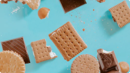

15:57
"Россия 1" не боится снимать сериалы о сложных и неоднозначных периодах в истории нашей страны. Это и "В круге первом", и "Жизнь и судьба", и "Зулейха". Идёт работа над "Одним днём Ивана Денисовича". Вопрос Антону Златопольскому -почему вы считаете
Далее
